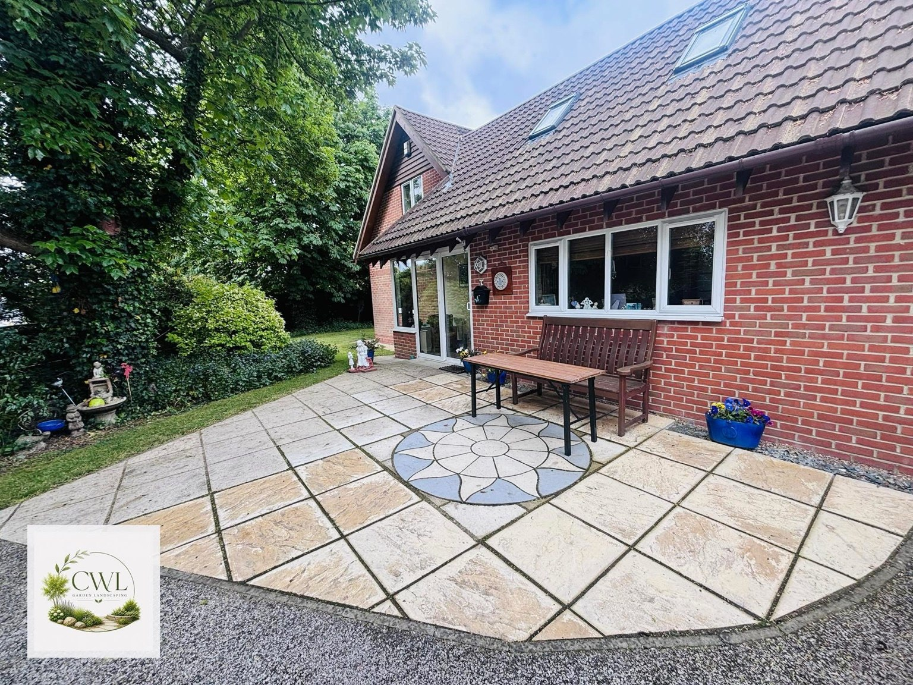
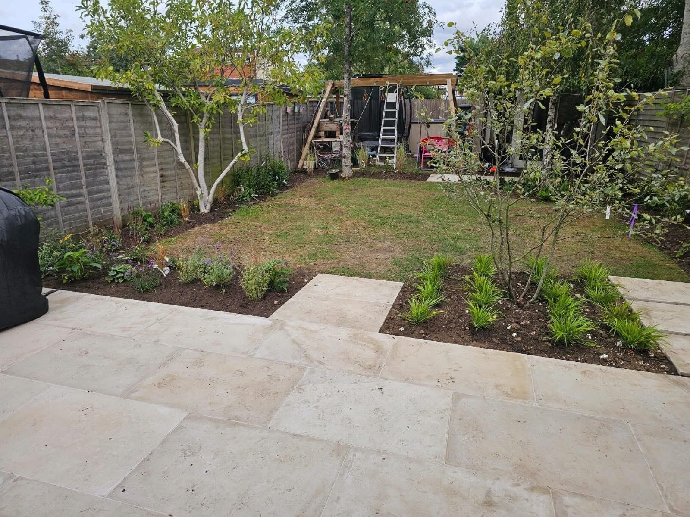
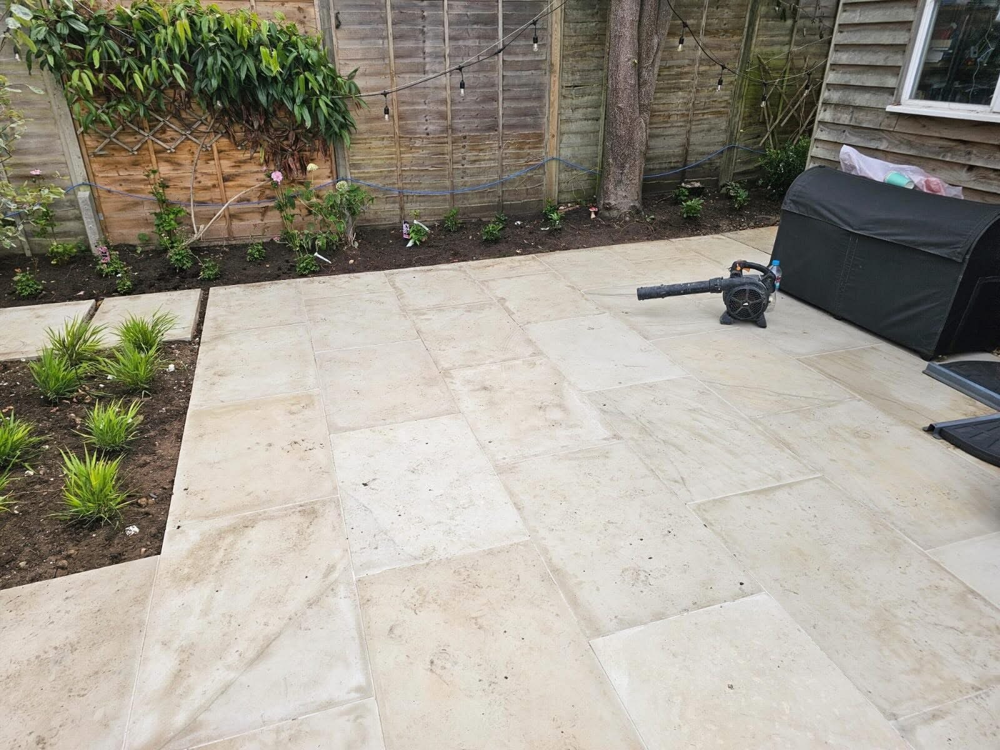
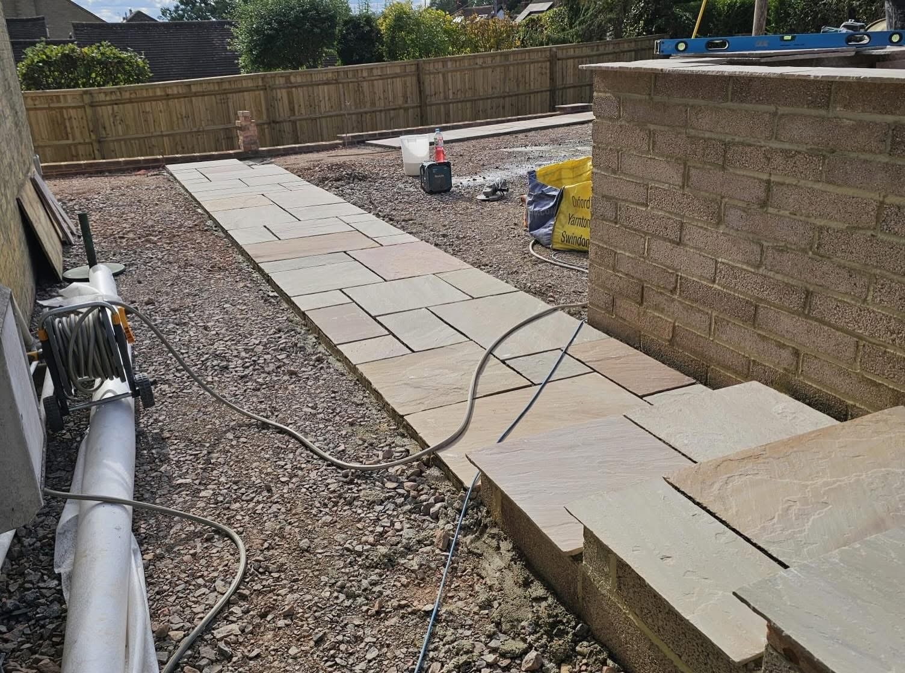
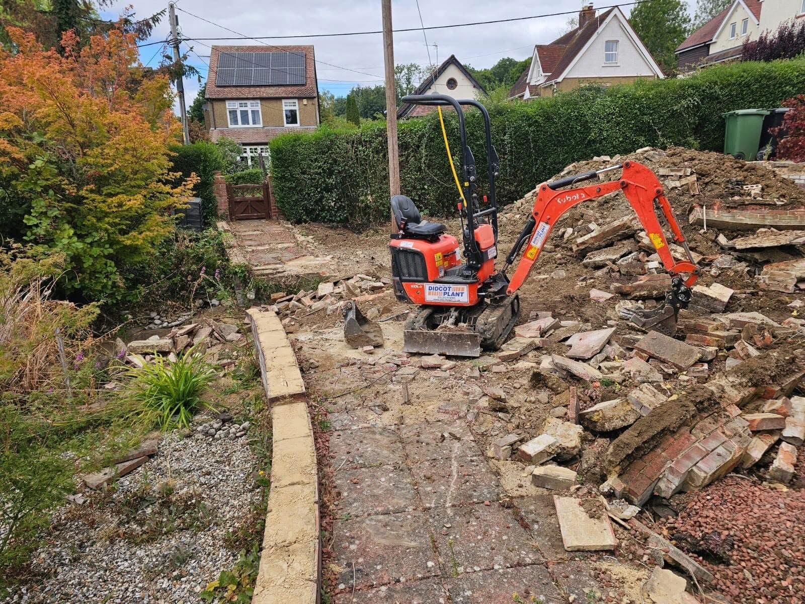
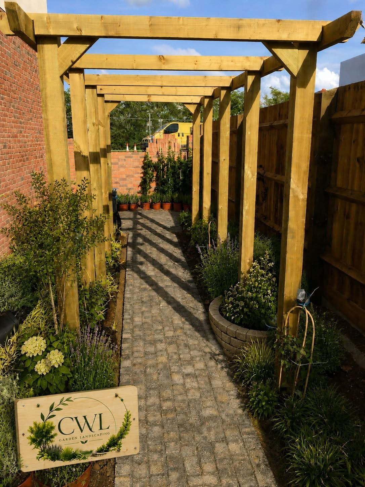
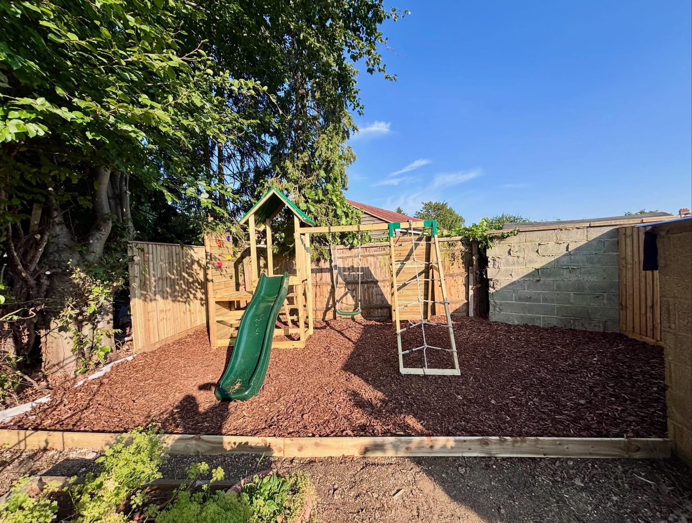
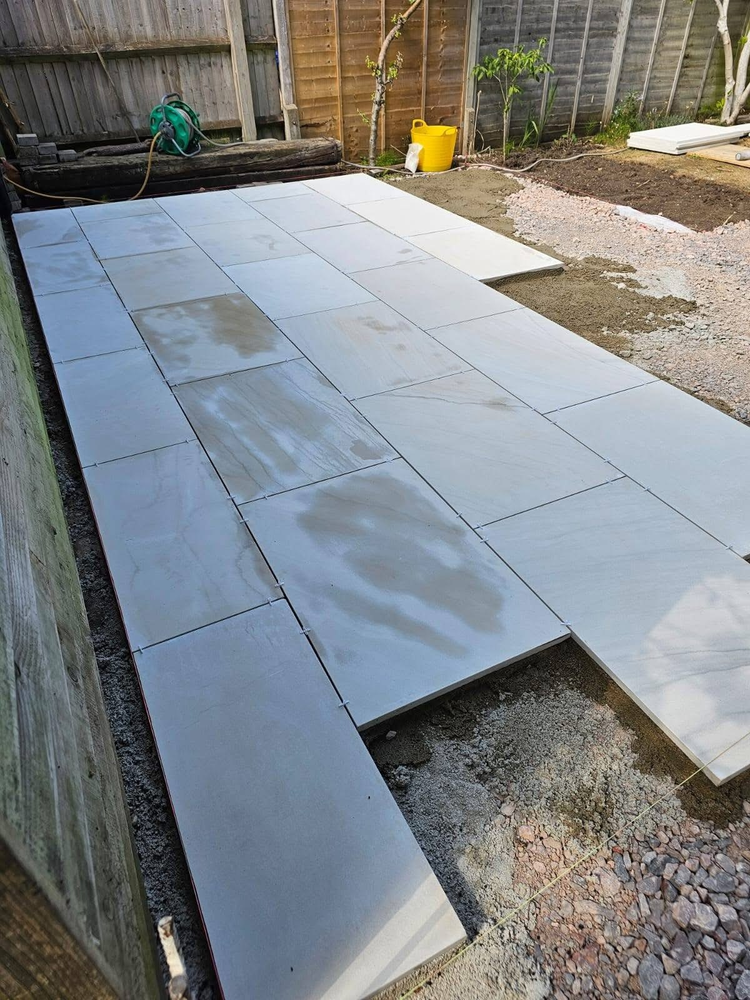
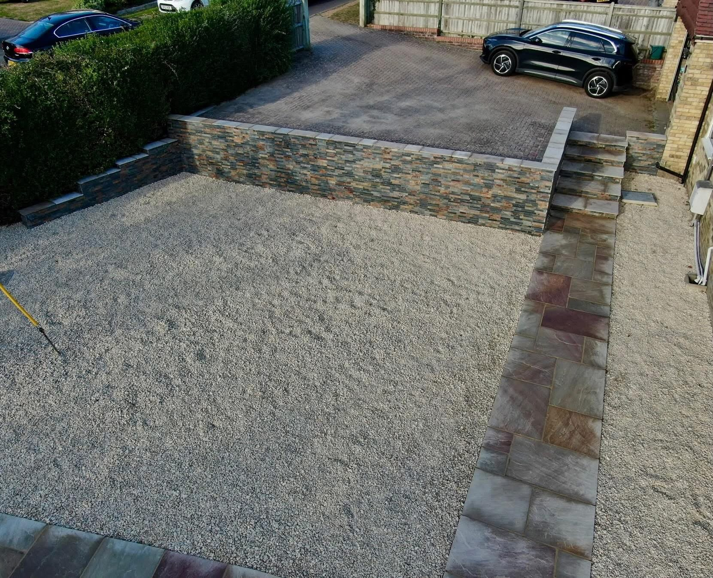

Landscaping & Patios in Oxford
Thoughtful layouts. Practical outdoor spaces.
CWL Landscaping Ltd is an Oxford landscaping and outdoor construction business. The projects bring together paving, planted borders, lawns, timber structures and changes of level. Browse completed spaces alongside work in progress, then share the area of your garden you want to improve.
Plan the space around everyday use
A patio beside the house, a path through planting or a garden with easier access each starts with a different priority. Tell CWL how you want to use the space and which features you would like to keep.
From groundwork to the garden details
The portfolio shows paving being laid, completed patio areas, timber structures, retaining walls and steps. Use the service pages to explore these elements and send your postcode and project details to start a conversation.
Request a quote →

Patios & paving & Garden landscaping
The work beneath the finished garden.
From groundwork and paving to the connections between walls, paths and planting, see the details that form an outdoor space.
Discuss your project →

RECENT WORK
See the finished work.
A closer look at projects and work in progress.




Oxford
Oxford landscaping. Direct contact.
CWL Landscaping Ltd is an Oxford landscaping and outdoor construction business. Share your project ideas, postcode and photos to discuss the space you want to create.
Explore patios, paths, timber features and garden construction.
Completed outdoor spaces and projects during construction.
Call, email or send your project details through WhatsApp.
GOOD TO KNOW
Your questions answered.
Where is CWL Landscaping based?
CWL Landscaping Ltd is based in Oxford. Include your postcode so the location of your project can be checked.
What projects can I discuss?
You can enquire about patios and paving, garden landscaping, timber garden structures, walls, steps and groundwork. The project photos show examples of this work.
Can I send photographs of my garden?
Yes. Use the WhatsApp form, then attach photographs to the prepared message before sending.
REQUEST A QUOTE
Tell us what you have in mind.
Send the details of your project and its location. WhatsApp opens with your enquiry ready to send, where you can also attach photos.
CWL Landscaping Ltd
Ready to discuss your project?
Oxford